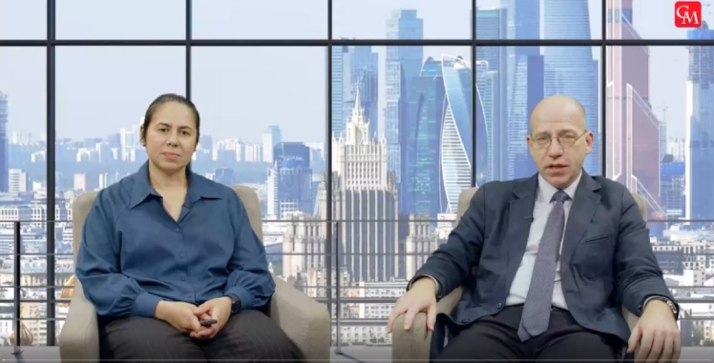
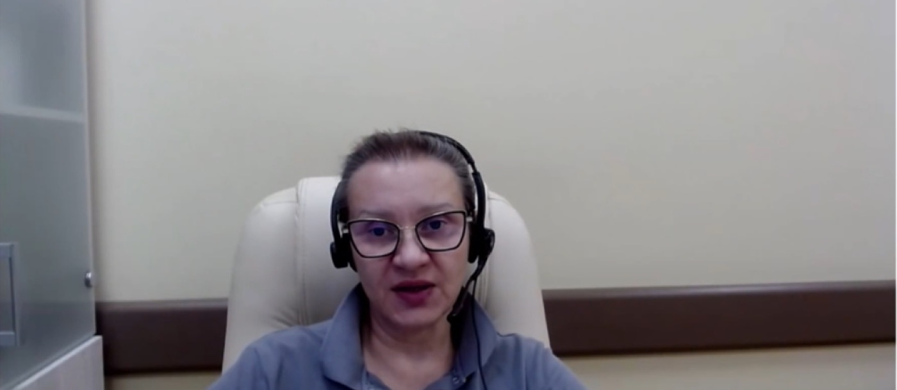
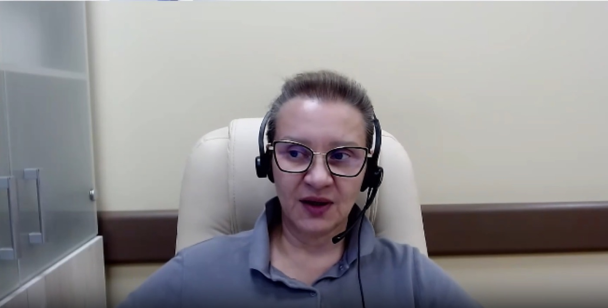
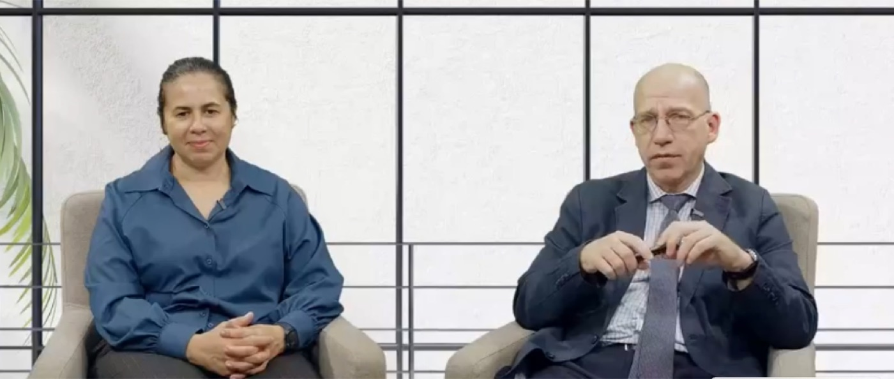

Невролог и оториноларинголог разбирают пациентов с острым и эпизодическим головокружением: какие вопросы задать, какие пробы провести на приёме и когда нужна срочная визуализация.

58:42Зайцева О.В.

1:02:15Зайцева О.В.

47:30Замерград М.В., Гусева А.Л.